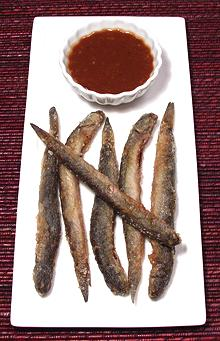

This air breathing vegetarian fish, a species of Goby, is found from India to Tahiti and north to China. It lives only in brackish waters, particularly in the Mekong Delta of Vietnam. It can grow to nearly 8 inches but the photo specimen was 7-1/2 inches and weighed 0.77 ounces. It was harvested wild in Vietnam where this fish is quite popular for a hot-pot soup named after it.
More on Goby Family.
 This fish is generally eaten whole. It may be grilled or fried but is more often used in a hotpot soup called Lau Cá Kèo, after the fish. This soup requires two essential herbs for the broth, la giang (lit. "river leaf"; Aganonerion polymorphum - sour) and rau dang (Glinus oppositifolius - bitter). Rau Dang is now available in Asian markets here in Los Angeles, but La Giang has apparently not yet received approval. The State of California is suspicious of possibly irrigation clogging water weeds. Other states have a similar attitude.
In Vietnam, many restaurants keep the fish alive (not difficult since they can breath air when they need to). When a customer orders Ca Keo soup it is brought to a boil, then the fish are put in live (to prove they're fresh), and the soup is eaten when it comes back to a boil. Live fish are not obtainable here because the State of California takes a very dim view of non-native air breathing fish that are impossible to exterminate once established in our waterways, as do Florida, Hawaii and other states.
Fried plain and eaten with a dip (a mix of fish sauce and tamarind called Nuoc Mam Me is often used in Vietnam) it's served as an appetizer (photo at left - deep fried with a light coating of salted sweet potato starch). The body cavity is mostly filled with fat, which sort of disappears during frying but leaves a strong slightly bitter taste which I don't really care for, so I clean the fish before frying. A Vietnamese ca keo eater might protest that I'm throwing away the best part, but even some Vietnamese admit the bitter taste was a bit off-putting until they got used to it.
On first encounter, what I didn't like about this fish was that it has a fair number of prickly parts which make eating it less pleasant than it might be. The worst of these can be avoided by removing the head with a cut behind the fins, but there are a few others.
Then I developed a way to make this fish into an enjoyable appetizer. It's a little messy, but, hey, this is an appetizer for guys and beer, not society ladies. You will need paper napkins.
Buying: These can be found in Asian markets serving a Southeast Asian community, generally packed in foam trays in the frozen food section, but sometimes on ice in the fish section.
Cleaning: Not done in Vietnam - but easily accomplished (see notes above). There are no detectable scales on this fish. It's up to you whether you remove the head or not. If you do, cut on a diagonal from just behind the head at the top, and behind both the pectoral and pelvic fins at the bottom.
sf_keoz 061111 r 100530 r 161116 - www.clovegarden.com